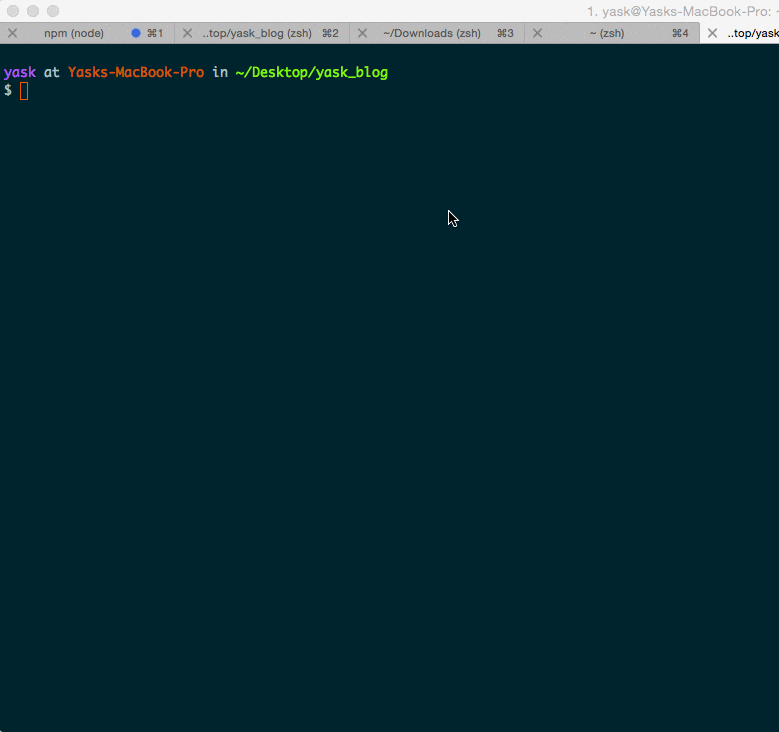

Revamped my blog
I had been thinking to make changes in my blog for a while but couldn't do it for the following reasons.
- Forgotten the command to create new post.
- I was using modified Casper theme (ported from Ghost), which was buggy...
- I wanted AMP pages (supported by themes) for my blog too.
- Got tired of blogging from code editor.
I guess all of that motivated me to move to Ghost. But, I didn't want to setup a nodejs stack just to serve some static files.
But then I came across this awesome python module called Buster. It's a hacky way to generate static files from running Ghost blog.
I wasn't expecting it work 100%, but was totally surprised! It works really well.
Created an alias $ alias updateblog="cd yask_blog && buster generate --domain=http://localhost:2368/ && buster deploy" which gets called whenever any changes are detected on my Ghost blog.
This makes it possible to instantly deploy my new blog after making any changes :)
